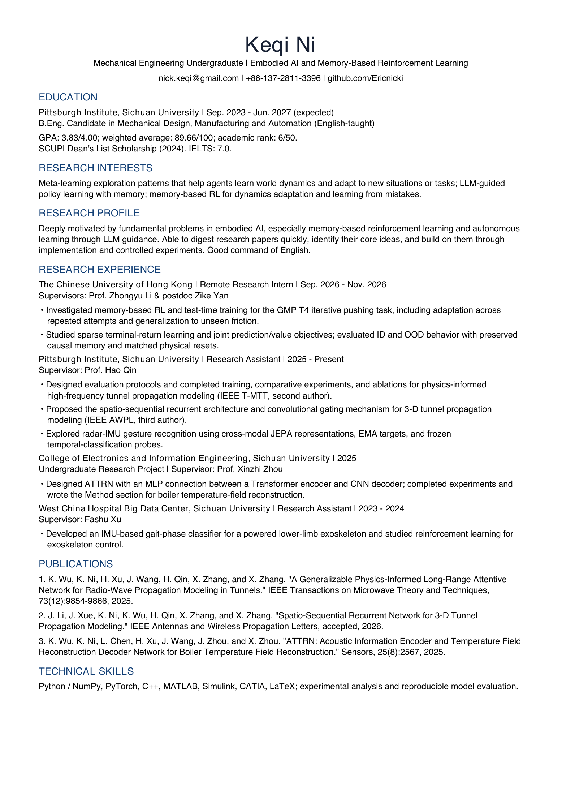

Curriculum vitae
Keqi Ni
Embodied AI, agent exploration, and memory-based reinforcement learning.
Education
Pittsburgh Institute, Sichuan University
B.Eng. candidate · September 2023 – June 2027 (expected)
GPA: 3.83 / 4.00 · Academic rank: 6 / 50
SCUPI Dean’s List Scholarship, 2024
